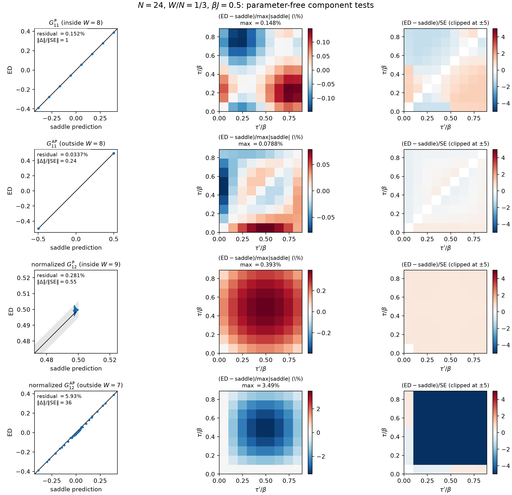
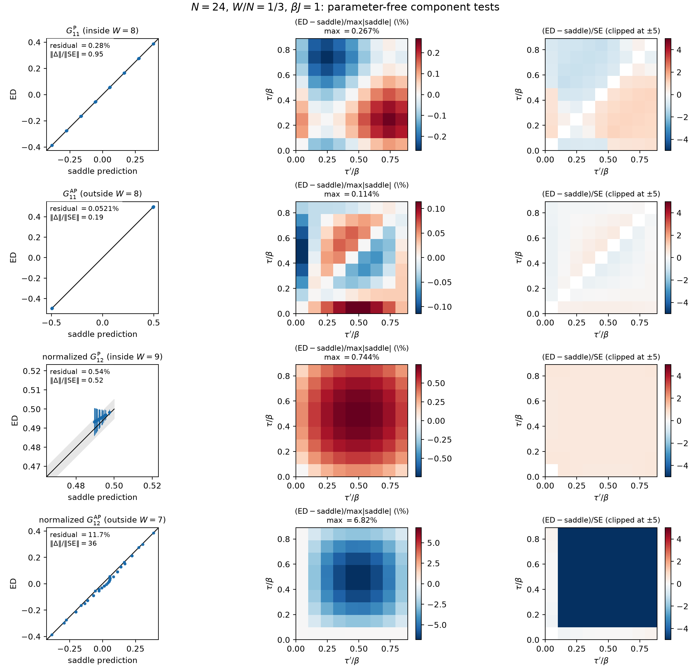

Calculation 5: larger-N, larger-weight same-side comparison
This calculation implements the proposed extension of calculation 4 to
N=24,\qquad A=\{1,\ldots,8\},\qquad w=8/24=1/3.
The observable and normalization are unchanged:
\mathcal C^{(s)}_{11}(\tau,\tau') = \frac{\mathbb E_J[ X^{(11)}_{A;i}(\tau,\tau')X_A]} {\mathbb E_J[X_A^2]},
with i\in A compared directly to G^{\rm P}_{11} and i\notin A compared directly to G^{\rm AP}_{11}.
compare_large_same_side.py replaces the
memory-heavy Hamiltonian action tables by compact permutation
and phase-code arrays and consumes exact-trace intermediates one
time separation at a time. Its default four-sample,
five-time-point run is a timing and memory pilot, not a
production statistics result.
The compact N=24 action
table occupies 124.5 MiB, compared with roughly 1 GiB for the
original Python representation. It is cached in
/tmp by default so that a generated file above
GitHub’s ordinary size limit is not placed in the journal
repository. Building it takes 12.1 seconds and loading it takes
about 0.07 seconds.
Run the pilot from this directory with
python3 compare_large_same_side.py --validate-compactFor an ED-only benchmark, add --skip-saddle.
Validation
At N=10, the compact
Hamiltonian is identical to the original constructor to machine
precision. The streaming and calculation-4 trace surfaces agree
with maximum error 3.1\times10^{-16}. These checks,
together with the small-N
cross-replica evaluator check, are collected by
validate_implementations.py and recorded in
validation.json.
Timing pilot
The pilot used 16 OpenBLAS threads on a 32-logical-core host with 15 GiB RAM.
| parameters | samples | ED seconds/sample | both saddles | peak RSS |
|---|---|---|---|---|
| \beta J=0.5, five times, L_\tau=60,120 | 2 | 31.5 | 3.1 s | 888 MiB |
| \beta J=1, five times, L_\tau=60,120 | 2 | 33.8 | 9.0 s | 888 MiB |
The measured stage costs predicted approximately 62–68 seconds per sample for nine ED times. Memory was not a limiting factor.
The two-sample results are only smoke tests, not estimates of the final finite-N discrepancies. Nevertheless, both comparisons already have the right normalization and shape:
| \beta J | P off-diagonal residual | AP off-diagonal residual | denominator ESS |
|---|---|---|---|
| 0.5 | 4.86\times10^{-3} | 2.82\times10^{-3} | 1.75 / 2 |
| 1 | 1.01\times10^{-2} | 4.68\times10^{-3} | 1.80 / 2 |
The preliminary difference/error norms are below one for P and about 1.8 for AP, but a two-sample jackknife is not quantitatively meaningful.
Outputs are in pilot_outputs_2/ and
pilot_outputs_2_beta1/. The three-time-point safety
run is retained in pilot_outputs_safety/.
Sixteen-sample comparison
The production calculation used 16 disorder samples, nine equally spaced times, and saddle grids L_\tau=90,180 at each of \beta J=0.5 and 1. The same disorder seed was used at the two temperatures. The reported saddle object is the linear continuum estimate
G_{\rm ext}=2G_{L_\tau=180}-G_{L_\tau=90}.
Both grid solves converged. The normalized ED surfaces require no fitted scale, offset, or shape parameters:
| \beta J | sector | off-diagonal residual | cosine similarity | difference/error norm |
|---|---|---|---|---|
| 0.5 | P, i\in A | 1.52\times10^{-3} | 0.9999989 | 1.04 |
| 0.5 | AP, i\notin A | 3.37\times10^{-4} | 0.99999996 | 0.24 |
| 1 | P, i\in A | 2.80\times10^{-3} | 0.9999961 | 0.95 |
| 1 | AP, i\notin A | 5.21\times10^{-4} | 0.99999987 | 0.19 |
Here the residual, with the contact diagonal omitted, is
\frac{\lVert\mathcal C_{11}-G_{\rm ext}\rVert} {\lVert G_{\rm ext}\rVert}.
The last column is the norm of the difference divided by the norm of the delete-one jackknife error surface. The denominator effective sample sizes are 7.25 of 16 at \beta J=0.5 and 7.32 of 16 at \beta J=1.
The P saddle has the larger grid dependence: the off-diagonal relative change from L_\tau=90 to 180 is 6.47\times10^{-3} at \beta J=0.5 and 1.78\times10^{-2} at \beta J=1. The corresponding AP changes are only 4.03\times10^{-5} and 2.51\times10^{-4}. Thus the continuum extrapolation is important for the P comparison.
Running the two temperatures concurrently took 21 minutes 51 seconds of wall time, averaging 77.9 and 77.0 seconds per sample, respectively. Each process peaked at 888 MiB RSS.
The production command at each temperature was:
OPENBLAS_NUM_THREADS=16 python3 compare_large_same_side.py \
--samples 16 --time-points 9 --path-slices 90 \
--beta 0.5 --outdir outputs_16_beta0p5Replacing --beta 0.5 and the output directory
gives the \beta J=1 run. The
complete outputs are in outputs_16_beta0p5/ and
outputs_16_beta1/.
Status: implemented, validated, and run by Codex (GPT 5.6 Sol), July 30, 2026.
Cross-replica components
The same stress test can be extended to G_{12}, but not by inserting a single
probe into the even W=8 trace:
that trace would have odd fermion parity and vanish. Instead,
compare_large_cross_replica.py uses the neighboring
odd backgrounds
A_- = \{1,\ldots,7\},\quad i\notin A_- \quad(\mathrm{AP}), \qquad A_+ = \{1,\ldots,9\},\quad i\in A_+ \quad(\mathrm P).
At a probe collision, both cases reduce to even strings of weight eight. The moment-normalized comparisons are therefore
\mathcal C^{\mathrm{AP}}_{12} =\frac{\frac1{17}\sum_{i\notin A_-}\mathbb E[Y_{A_-i}(\tau)Y_{A_-i}(\tau')]} {\frac1{17}\sum_{i\notin A_-}\mathbb E[X_{A_-\cup\{i\}}^2]} \stackrel{?}{=}-\frac12\frac{G^{\mathrm{AP}}_{12}(\tau,\tau')} {G^{\mathrm{AP}}_{12}(0,0)},
\mathcal C^{\mathrm P}_{12} =\frac{\frac1{9}\sum_{i\in A_+}\mathbb E[Y_{A_+i}(\tau)Y_{A_+i}(\tau')]} {\frac1{9}\sum_{i\in A_+}\mathbb E[X_{A_+\setminus\{i\}}^2]} \stackrel{?}{=}+\frac12\frac{G^{\mathrm P}_{12}(\tau,\tau')} {G^{\mathrm P}_{12}(0,0)}.
There is no fitted amplitude, offset, or time shift. The production run used the same N=24, 16 disorder samples, nine times, and L_\tau=90,180 continuum extrapolation as the G_{11} test. Each Hamiltonian eigensystem was reused for both odd backgrounds and both temperatures.
At the common target saddle weight w=8/24, the results are
| \beta J | component | residual away from collision | cosine similarity | difference/error norm |
|---|---|---|---|---|
| 0.5 | G^{\mathrm P}_{12}, W=9 inside probes | 2.81\times10^{-3} | 0.99999960 | 0.55 |
| 0.5 | G^{\mathrm{AP}}_{12}, W=7 outside probes | 5.93\times10^{-2} | 0.998430 | 35.83 |
| 1 | G^{\mathrm P}_{12}, W=9 inside probes | 5.40\times10^{-3} | 0.99999850 | 0.52 |
| 1 | G^{\mathrm{AP}}_{12}, W=7 outside probes | 1.174\times10^{-1} | 0.993910 | 36.07 |
Thus the normalized P component agrees at the sub-percent level, and its difference is smaller than the pointwise jackknife-error norm. As the centered analysis below shows, this statement is dominated by the protected periodic constant and does not resolve the smaller time-dependent shape. The AP component captures the sign-changing structure but retains a smooth, statistically decisive discrepancy that roughly doubles when \beta J is doubled. Using the literal background weights changes little: the P residuals become 0.240\% and 0.387\% at w=9/24, while the AP residuals become 5.89\% and 11.64\% at w=7/24.
The evaluator was checked directly against the original dense-thermal-kernel trace routine at N=8, with maximum error 9.5\times10^{-16}. The 16-sample ED portion took 235 seconds in total (14.7 seconds per sample) and peaked at 888 MiB RSS. Run it with
OPENBLAS_NUM_THREADS=16 python3 compare_large_cross_replica.py \
--validate --samples 16 --outdir cross_replica_outputs_16Numerical arrays and diagnostics are in
cross_replica_outputs_16/.
Seeing the agreement directly
Cosine similarities close to one are not very discriminating
here, because the contact normalization and the dominant
constant or sign-changing shape can overwhelm a smooth
correction. plot_component_agreement.py therefore
puts all four conditional components on the same three
diagnostics:
- an ED-versus-saddle parity plot with the identity line and a one-percent band;
- the difference surface as a percentage of the peak saddle signal;
- the pointwise difference in units of the jackknife standard error, clipped at \pm5 for readability.
The last panel is not a \chi^2 map—the time points are
strongly correlated—but it cleanly separates a small noisy
difference from a coherent one. The dashboards are in
component_diagnostics/ and can be regenerated
with
python3 plot_component_agreement.py

Cross-replica extension and component diagnostics added August 3, 2026.
Centered cross-replica shapes
The full-surface P residuals above are dominated by the
nearly constant periodic zero-mode contribution, whose collision
normalization is fixed by construction.
analyze_cross_replica_shapes.py therefore subtracts
the mean of each ED and saddle surface, fits one amplitude to
the remaining shape, and reports a centered residual and
correlation. Delete-one-sample jackknife errors are applied to
these global scalar metrics, preserving the correlations among
all 81 time-point pairs.
At the common target weight w=8/24 the results are
| \beta J | sector | fitted centered amplitude | centered correlation | fitted centered residual |
|---|---|---|---|---|
| 0.5 | P | 0.226\pm1.432 | 0.957\pm2.847 | 0.290\pm1.115 |
| 0.5 | AP | 0.99776\pm0.00135 | 0.9994695\pm0.0000023 | 0.032570\pm0.000072 |
| 1 | P | 0.619\pm0.741 | 0.9978\pm0.0795 | 0.0661\pm0.3470 |
| 1 | AP | 0.99245\pm0.00264 | 0.9979537\pm0.0000078 | 0.063941\pm0.000122 |
The large P jackknife errors are the result: with 16 samples its small time-dependent component is not resolved, so the sub-percent uncentered P agreement tests the protected constant but not the detailed shape. The AP shape is well resolved and differs coherently from the saddle by 3.26\% at \beta J=0.5 and 6.39\% at \beta J=1 even after allowing a fitted amplitude.
A full covariance-aware surface \chi^2 is not possible with these data: an 81-entry surface estimated from 16 samples has covariance rank at most 15. The correlated scalar jackknife is reported instead, without assigning a p-value. Run the postprocessor with
python3 analyze_cross_replica_shapes.pyThe complete literal- and common-weight results are in
cross_replica_outputs_16/shape_diagnostics.json.
Centered-shape analysis added by Codex (GPT 5.6 Sol) on August 3, 2026; the entry was updated with the result.